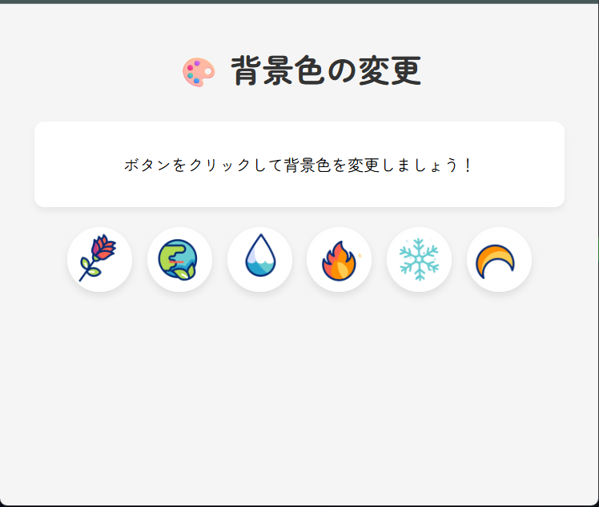
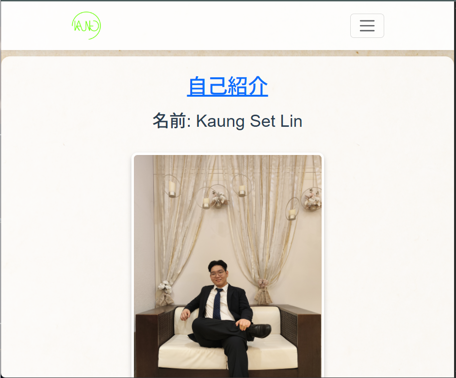
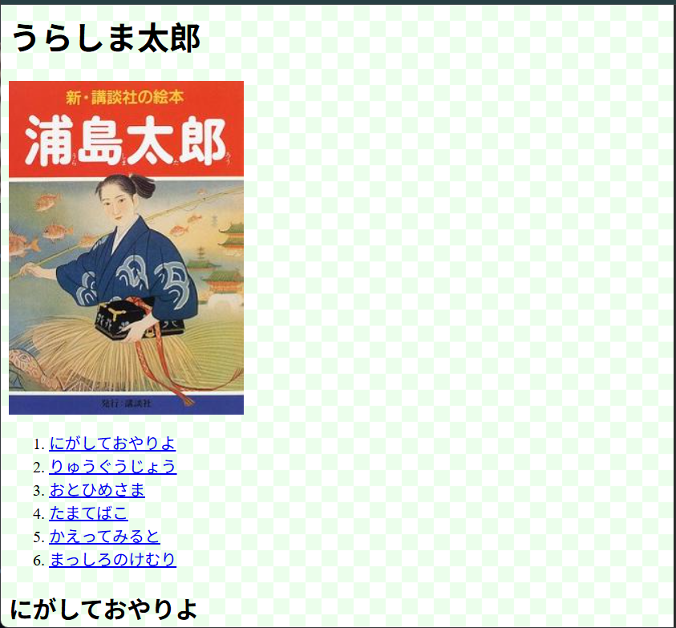

Introduce myself
I build small games and interactive web projects using Godot, GDScript and C++ web technologies. I used to work as a backend engineer in visibleOne before.
Tech highlights: Godot, GDScript, HTML, CSS, JavaScript. Interested in game design, UI, and tooling.
Languages: Japanese English Myanmar

Preview
あいうえお — Aiueo
Puzzle/strategy Godot game. Visit itch.io to play or download.

Preview
Guess-The-Color
Color-guessing puzzle. Play online or get builds from itch.io.

Preview
TicTacToe — TheDarknessCat
Classic Tic Tac Toe — play in the browser or on mobile.

Preview
Change Background WEB
Interactive page demonstrating background changes and DOM manipulation.

Preview
School Profile — Myself
A school project page introducing personal profile and school activities.

Preview
Urashima
Creative web project inspired by the Urashima tale—interactive elements included.